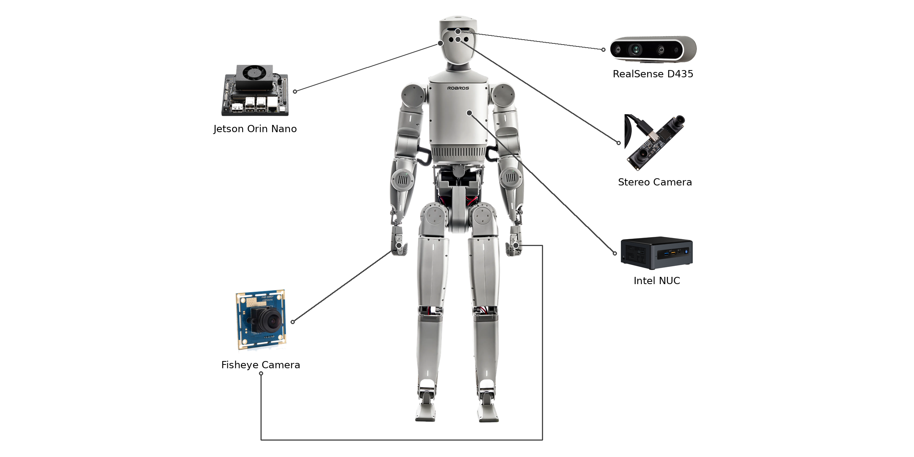

Real-time Camera Streaming for the IGRIS-C Humanoid

Software Intern, ROBROS · Dec 2025 – Mar 2026
I built the software that sends live video from the cameras on ROBROS's IGRIS-C humanoid robot to the computers that process it, over a mix of wired and wireless networks, and packaged it so it starts on its own when the robot is switched on. This work is part of the Camera API in IGRIS-C's public SDK.
The robot has cameras in several places (a depth camera, a stereo camera in the head, and a camera on each hand), and the computers that use the video sit in different parts of the robot.
The video had to arrive in real time with little delay, over a network that mixes cable (LAN) and Wi-Fi.
The starting send/receive code for the robot's messaging layer (CycloneDDS, the communication layer ROS 2 is built on) did not work, and messages failed to cross from the wired to the wireless network.
It also had to be ready to use: switch the robot on and it works, with no manual setup.
Video message format — designed the format the video frames are sent in, modeled on ROS message types, and wrote the sender and receiver in both Python and C++. Frames are JPEG-compressed to save bandwidth.
Fixing the base layer — traced the failures down to the build setup and operating-system limits (the message compiler was missing from the build; the OS network buffers were too small) and fixed both.
Crossing networks — made one machine forward traffic between the wired and wireless networks, and controlled the routes data takes. Every frame carries a sequence number so dropped frames can be detected.
No manual network setup — when the robot switches between Wi-Fi and access-point mode, routes reset automatically, and the forwarding machine is found automatically from its hardware address.
Settings without rebuilding — resolution, frame rate and JPEG quality can be changed while the camera is running, through a request/response service. Tried many resolution/frame-rate combinations to find a good balance between delay and image quality.
Smooth handling of many cameras — each camera runs on its own thread, and frames are handled asynchronously, so one camera does not hold up the others.
Shipping it — compiled the core logic into a binary module with Cython (faster, and keeps the source private), made the program start at boot and restart on crash (systemd), split the build per machine, and wrote install, operation and troubleshooting docs for handover.


Live video works end to end over cable, Wi-Fi and access-point mode, and was reproduced on a new device.
The same software can be deployed to multiple IGRIS-C robots and runs once the robot is powered on.
The camera data channels and the live settings service are part of the Camera API in IGRIS-C's public SDK.
Internship evaluation: 100 / 100; attendance 69 days, 0 absences.
Built the camera streaming system end to end, from message format and networking to deployment and docs: mainly Python, with parts in C++.